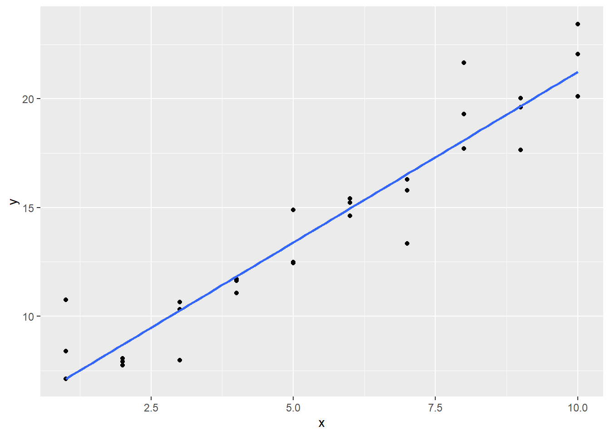
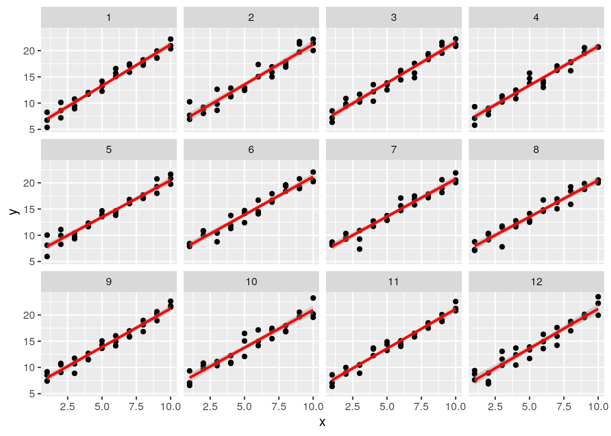
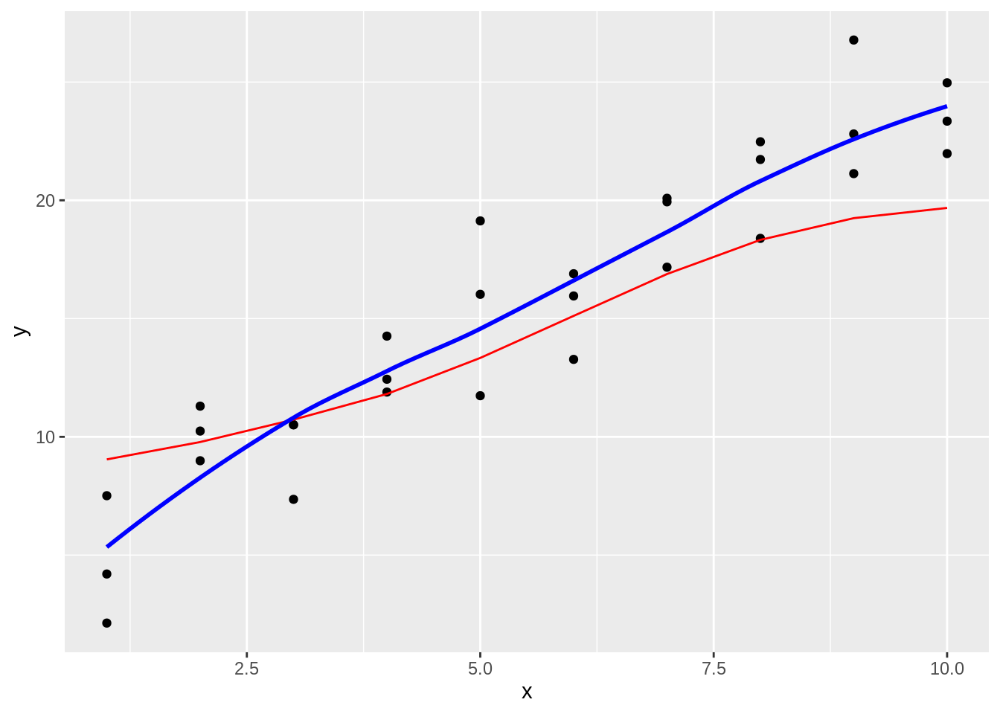
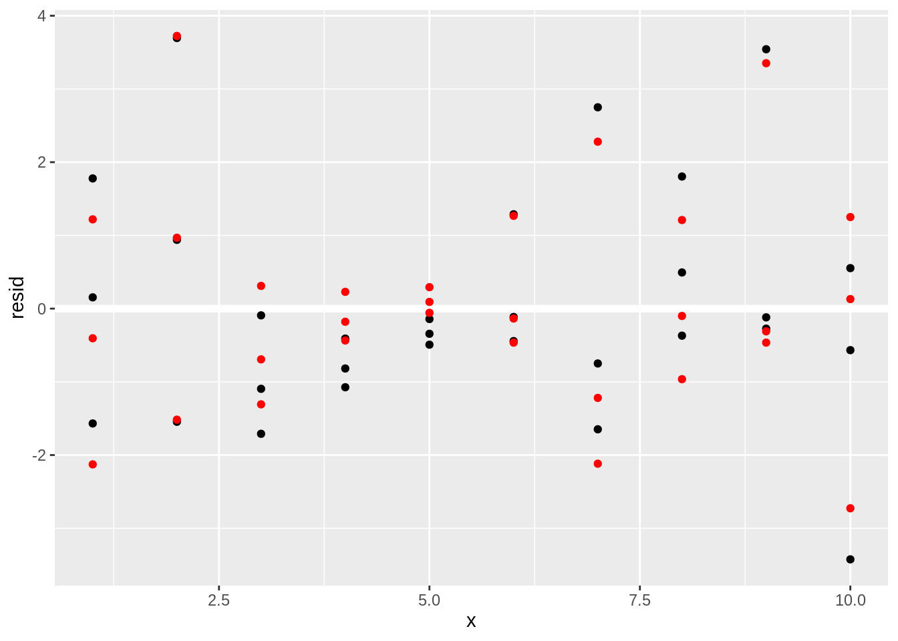
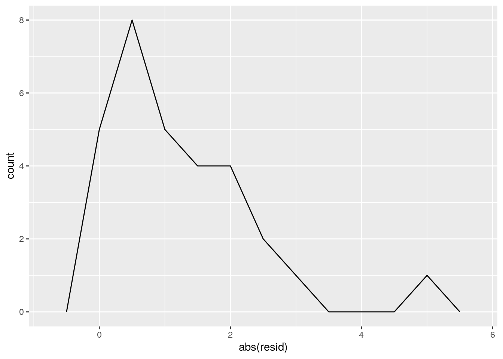
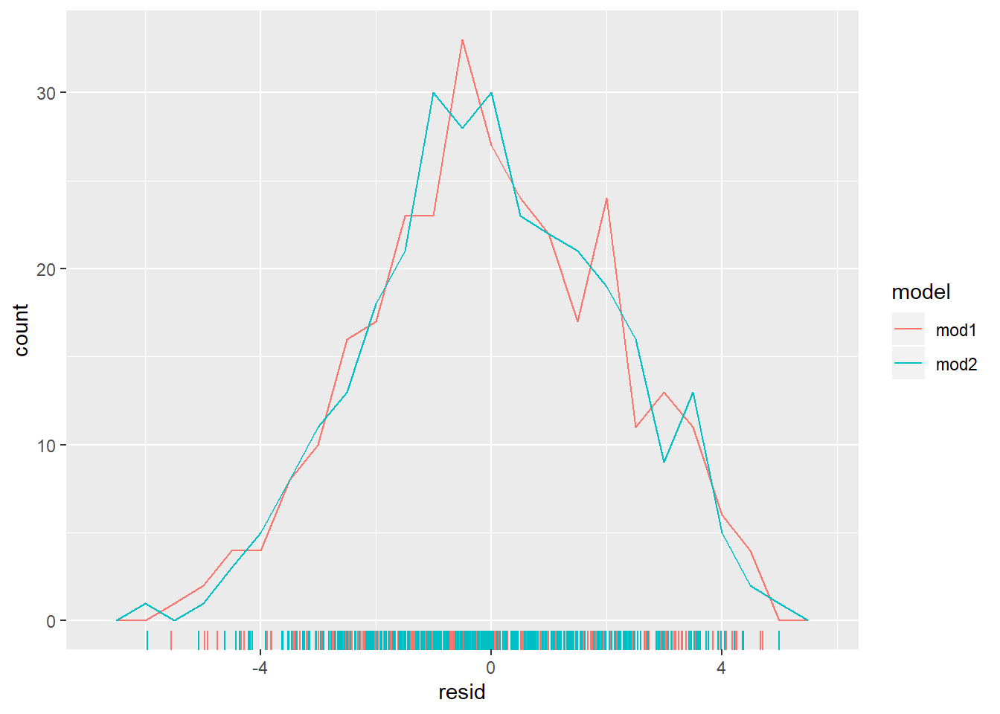
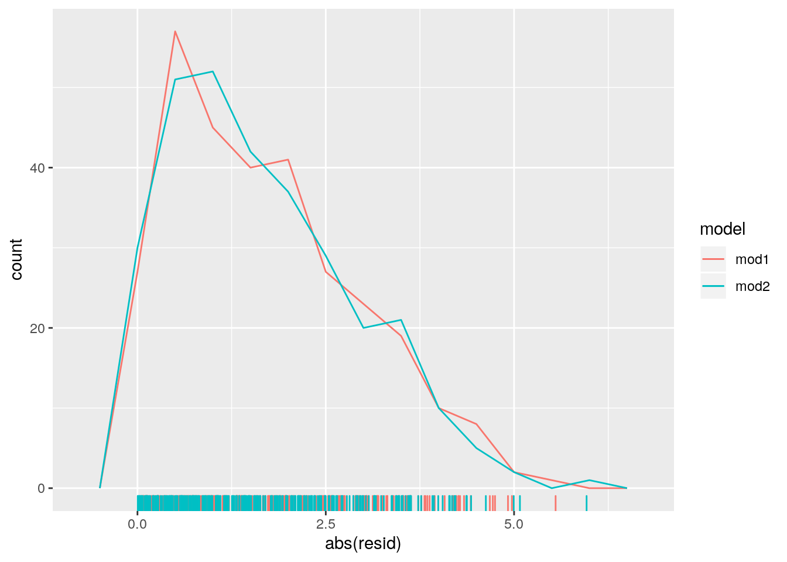

19 Modelos: conceptos básicos
19.1 Paquetes necesarios
##
## Attaching package: 'dplyr'## The following objects are masked from 'package:stats':
##
## filter, lag## The following objects are masked from 'package:base':
##
## intersect, setdiff, setequal, union19.2 Un modelo simple
19.2.1 Ejercicios
- Una desventaja del modelo lineal es ser sensible a valores inusuales debido a que la distancia incorpora un término al cuadrado. Ajusta un modelo a los datos simulados que se presentan a continuación y visualiza los resultados. Corre el modelo varias veces para generar diferentes conjuntos de datos simulados. ¿Qué puedes observar respecto del modelo?
Solución
Se puede correr una vez y graficar los resultados.

Para sistematizarlo, se pueden generar varias simulaciones y luego graficar las líneas.
simt <- function(i) {
tibble(
x = rep(1:10, each = 3),
y = x * 1.5 + 6 + rt(length(x), df = 2),
.id = i
)
}
sims <- map_df(1:12, simt)
ggplot(sims, aes(x = x, y = y)) +
geom_point() +
geom_smooth(method = "lm", colour = "red") +
facet_wrap(~.id, ncol = 4)
El ejercicio usa la función rt() la cual entrega
un muestreo a partir de una distribución t-Student, la cual tiene colas más
largas que la distribución normal (rnorm()), por lo tanto asigna una mayor
probabilidad a los valores fuera del centro de la distribución.
¿Qué ocurre si usamos una distribución normal?
sim_norm <- function(i) {
tibble(
x = rep(1:10, each = 3),
y = x * 1.5 + 6 + rnorm(length(x)),
.id = i
)
}
simdf_norm <- map_df(1:12, sim_norm)
ggplot(simdf_norm, aes(x = x, y = y)) +
geom_point() +
geom_smooth(method = "lm", colour = "red") +
facet_wrap(~.id, ncol = 4)
Al usar distribución normal no hay tantos valores extremos y las pendientes son más similares.
Para el caso de la distribución normal con media cero y desviación estándar uno,
la probabilidad de que un valor sea mayor a dos se obtiene con pnorm().
## [1] 0.02275013Para el caso de la distribución t-Student con dos grados de libertad, la
probabilidad es más del triple del caso anterior y se obtiene con pt().
## [1] 0.09175171Podemos concluir que el modelo es sensible a valores extremos y en general a la distribución que siguen los datos.
- Una forma de obtener un modelo lineal más robusto es usar una métrica distinta para la distancia. Por ejemplo, en lugar de la raíz de la distancia media cuadrática (del inglés root-mean-squared distance) se podría usar la media de la distancia absoluta:
medir_distancia <- function(modelo, datos) {
diferencia <- datos$y - modelo1(modelo, datos)
mean(abs(diferencia))
}Usa optim() para ajustar este modelo a los datos simulados anteriormente y
compara el resultado con el modelo lineal.
Solución
Usando los datos sim1a y optim() podemos encontrar los parámetros que
minimizan la desviación absoluta. Definiremos la función modelo1() tal como
se hizo en el libro.
modelo1 <- function(a, datos) {
a[1] + datos$x * a[2]
}
beta <- optim(c(0, 0), medir_distancia, datos = sim1a)
beta$par## [1] 5.882107 1.518106Los resultados del modelo lineal son los mismos que se obtienen si se minimiza la desviación al cuadrado.
medir_distancia_ml <- function(modelo, datos) {
diferencia <- datos$y - (modelo[1] + modelo[2] * datos$x)
sqrt(mean(diferencia^2))
}
beta <- optim(c(0, 0), medir_distancia_ml, datos = sim1a)
beta$par## [1] 6.178097 1.474863En la práctica no es recomendable usar optim() para ajustar un modelo, es
mejor utilizar implementaciones ya existentes como rlm() y lqs() que son
parte del paquete MASS.
La justificación es que estas implementaciones permiten ajustar modelos
robustos sin los múltiples problemas de carácter numérico que pueden surgir de
manera condicional a los datos al momento de usar optim().
- Un desafío al realizar optimización numérica es que únicamente garantiza encontrar un óptimo local. ¿Qué problema se presenta al optimizar un modelo de tres parámetros como el que se presenta a continuación?
Solución
El problema es que dados los valores a[1] = a1 y a[3] = a3, cualquier otra
combinación de a[1] y a[3] tal que a[1] + a[3] == (a1 + a3) tendrá el
mismo ajuste.
medir_distancia_3_ml <- function(a, datos) {
diferencia <- datos$y - modelo3(a, datos)
sqrt(mean(diferencia^2))
}Dependiendo de los valores inciales se van a obtener distintos valores óptimos.
## [1] -3.759406 1.474911 9.937369## [1] -8.861492 1.474764 15.040083## [1] 1.106959 1.475012 5.070307Si seguimos alterando los valores inciales no es muy difícil concluir que existen infinitos valores óptimos para este modelo.
19.3 Visualizando modelos
19.3.1 Ejercicios
- En lugar de usar
lm()para ajustar una línea recta, puedes usarloess()para ajustar una curva suave. Repite el proceso de ajustar el modelo, generar la cuadrícula, predicciones y visualización consim1usandoloess()en vez delm(). ¿Cómo se compara el resultado ageom_smooth().
Solución
Usando add_predictions() y add_residuals() se pueden agregar las
predicciones y los residuos de la regresión loess a los datos sim1a.
sim1_loess <- loess(y ~ x, data = sim1a)
sim1_lm <- lm(y ~ x, data = sim1a)
grid_loess <- sim1a %>%
add_predictions(sim1_loess)
sim1a <- sim1a %>%
add_residuals(sim1_lm) %>%
add_predictions(sim1_lm) %>%
add_residuals(sim1_loess, var = "resid_loess") %>%
add_predictions(sim1_loess, var = "pred_loess")Ahora procedemos a graficar las predicciones. La regresión loess genera un ajuste no lineal a partir de los datos.
plot_sim1_loess <- ggplot(sim1, aes(x = x, y = y)) +
geom_point() +
geom_line(aes(x = x, y = pred), data = grid_loess, colour = "red")
plot_sim1_loess
Las predicciones del modelo loess son las mismas que entrega el método por
defecto de geom_smooth() ya que este usa loess() y entrega un mensaje al
respecto.

Podemos graficar los residuos de loess (en rojo) y compararlos con los del modelo lineal (en negro). En general, el modelo loess tiene un menor residuo dada la muestra (fuera de la muestra no se asegura este comportamiento y no hemos considerado la incertidumbre de la estimación).
ggplot(sim1a, aes(x = x)) +
geom_ref_line(h = 0) +
geom_point(aes(y = resid)) +
geom_point(aes(y = resid_loess), colour = "red")
add_predictions()está pareada congather_predictions()yspread_predictions(). ¿Cómo difieren estas tres funciones?
Solución
Las funciones gather_predictions() y spread_predictions() permiten incluir
simultáneamente las predicciones de múltiples modelos.
Por ejemplo, se puede incluir sim1_mod.
La función add_predictions() permite incluir un modelo a la vez. Para agregar
dos modelos se debe encadenar con el operador %>%.
grid %>%
add_predictions(sim1_mod, var = "pred_lm") %>%
add_predictions(sim1_loess, var = "pred_loess")## # A tibble: 10 x 3
## x pred_lm pred_loess
## <int> <dbl> <dbl>
## 1 1 6.27 8.80
## 2 2 8.32 9.66
## 3 3 10.4 10.5
## 4 4 12.4 11.4
## 5 5 14.5 12.3
## 6 6 16.5 13.8
## 7 7 18.6 16.0
## 8 8 20.6 18.1
## 9 9 22.7 20.0
## 10 10 24.7 21.8La función gather_predictions() incorpora predicciones de múltiples modelos
por medio de agrupar los resultados e incluir una columna con el nombre del
modelo.
## # A tibble: 20 x 3
## model x pred
## <chr> <int> <dbl>
## 1 sim1_mod 1 6.27
## 2 sim1_mod 2 8.32
## 3 sim1_mod 3 10.4
## 4 sim1_mod 4 12.4
## 5 sim1_mod 5 14.5
## 6 sim1_mod 6 16.5
## 7 sim1_mod 7 18.6
## 8 sim1_mod 8 20.6
## 9 sim1_mod 9 22.7
## 10 sim1_mod 10 24.7
## 11 sim1_loess 1 8.80
## 12 sim1_loess 2 9.66
## 13 sim1_loess 3 10.5
## 14 sim1_loess 4 11.4
## 15 sim1_loess 5 12.3
## 16 sim1_loess 6 13.8
## 17 sim1_loess 7 16.0
## 18 sim1_loess 8 18.1
## 19 sim1_loess 9 20.0
## 20 sim1_loess 10 21.8La función spread_predictions() incorpora predicciones de múltiples modelos
agregando múltiples columnas (de acuerdo al nombre de cada modelo) que contienen
las predicciones respectivas.
## # A tibble: 10 x 3
## x sim1_mod sim1_loess
## <int> <dbl> <dbl>
## 1 1 6.27 8.80
## 2 2 8.32 9.66
## 3 3 10.4 10.5
## 4 4 12.4 11.4
## 5 5 14.5 12.3
## 6 6 16.5 13.8
## 7 7 18.6 16.0
## 8 8 20.6 18.1
## 9 9 22.7 20.0
## 10 10 24.7 21.8La función spread_predictions() es similar a correr add_predictions() para
cada modelo que se quiere incorporar y es equivalente a correr spread() luego
de gather_predictions().
## # A tibble: 10 x 3
## x sim1_loess sim1_mod
## <int> <dbl> <dbl>
## 1 1 8.80 6.27
## 2 2 9.66 8.32
## 3 3 10.5 10.4
## 4 4 11.4 12.4
## 5 5 12.3 14.5
## 6 6 13.8 16.5
## 7 7 16.0 18.6
## 8 8 18.1 20.6
## 9 9 20.0 22.7
## 10 10 21.8 24.7- ¿Qué hace
geom_ref_line()? ¿De qué paquete proviene? ¿Por qué es útil e importante incluir una línea de referencia en los gráficos que muestran residuos?
Solución
La geometría geom_ref_line() agrega una línea de referencia al gráfico. Es el
equivalente a usar geom_hline() o geom_vline() con las opciones por defecto
y que nos sirven para visualizar modelos.
Agregar una línea de referencia en torno a cero para los residuos es importante ya que un buen modelo, por lo general, tiene residuos centrados en torno a cero. Otras características relevantes son que los errores deben tener idéntica varianza y no estar correlacionados entre si.
La línea de referencia en torno a cero permite evaluar visualmente estas características.
- ¿Por qué quisieras mirar un polígono de frecuencias con los residuos absolutos? ¿Cuáles son las ventajas y desventajas de los residuos crudos?
Solución
Mostrar los valores absolutos de los residuos facilita ver la magnitud del error. El modelo lineal asume que los residuos tienen media cero y usar los valores absolutos de los residuos permite ver lo que ocurre cuando los errores de signos opuestos no se cancelan mutuamente.
sim1_mod <- lm(y ~ x, data = sim1a)
sim1 <- sim1 %>%
add_residuals(sim1_mod)
ggplot(sim1a, aes(x = abs(resid))) +
geom_freqpoly(binwidth = 0.5)
El inconveniente que aparece visualmente es que se pierde toda información respecto de los signos de los residuos. Por lo tanto, el polígono de frecuencias no distingue si acaso el modelo sobre-estima o sub-estima de manera consistente.
19.4 Fórmulas y familias de modelos
19.4.1 Ejercicios
- ¿Qué pasa si repites el análisis de
sim2usando un modelo sin intercepto? ¿Qué ocurre con la ecuación del modelo? ¿Qué ocurre con las predicciones?
Solución
Para estimar el modelo sin intercepto agregamos -1 o +0 al lado derecho
de la fórmula.
Las predicciones son las mismas en el caso con o sin intercepto:
## # A tibble: 4 x 3
## x mod2 mod2a
## <chr> <dbl> <dbl>
## 1 a 1.15 1.15
## 2 b 8.12 8.12
## 3 c 6.13 6.13
## 4 d 1.91 1.91- Usa
model_matrix()para explorar las ecuaciones generadas por los modelos ajustados asim3ysim4. ¿Por qué*es un atajo para la interacción?
Solución
El caso x1 * x2 cuando x2 es una variable categórica produce las variables
binarias x2b, x2c y x2d y las variables continuas x1:x2b, x1:x2c y
x1:x2d que son el producto de x1 y x2*.
## # A tibble: 120 x 8
## `(Intercept)` x1 x2b x2c x2d `x1:x2b` `x1:x2c` `x1:x2d`
## <dbl> <dbl> <dbl> <dbl> <dbl> <dbl> <dbl> <dbl>
## 1 1 1 0 0 0 0 0 0
## 2 1 1 0 0 0 0 0 0
## 3 1 1 0 0 0 0 0 0
## 4 1 1 1 0 0 1 0 0
## 5 1 1 1 0 0 1 0 0
## 6 1 1 1 0 0 1 0 0
## 7 1 1 0 1 0 0 1 0
## 8 1 1 0 1 0 0 1 0
## 9 1 1 0 1 0 0 1 0
## 10 1 1 0 0 1 0 0 1
## # … with 110 more rowsPodemos confirmar que las variables x1:x2b son el producto de x1 y x2b.
## [1] TRUEEs similar para x1:x2c y x2c como para el caso de x1:x2d y x2d.
## [1] TRUE## [1] TRUEPara x1 * x2 cuando x1 y x2 son continuas, model_matrix() creas las
variables x1, x2 y x1:x2.
## # A tibble: 300 x 4
## `(Intercept)` x1 x2 `x1:x2`
## <dbl> <dbl> <dbl> <dbl>
## 1 1 -1 -1 1
## 2 1 -1 -1 1
## 3 1 -1 -1 1
## 4 1 -1 -0.778 0.778
## 5 1 -1 -0.778 0.778
## 6 1 -1 -0.778 0.778
## 7 1 -1 -0.556 0.556
## 8 1 -1 -0.556 0.556
## 9 1 -1 -0.556 0.556
## 10 1 -1 -0.333 0.333
## # … with 290 more rowsSe puede confirmar que x1:x2 es el producto de x1 y x2.
## [1] TRUE- Usando los principios básicos, convierte las fórmulas de los siguientes modelos en funciones. (Sugerencia: comienza por convertir las variables categóricas en ceros y unos.)
Solución
El lado derecho de las fórmulas se encarga de generar una matriz de diseño a
partir de las columnas x1 y x2, lo que se ve reflejado en model_matrix().
Veamos los niveles de x2, que por ser una variable categórica es la más
compleja de llevar a la matriz de diseño. x1 permanece inalterada.
## [1] "a" "b" "c" "d"Para el caso ~ x1 + x2 lo que haremos es considerar “a” como el nivel de
referencia, por lo que se omite, y luego generamos nuevas columnas para los
niveles “b”, “c” y “d”.
model_matrix_mod1 <- function(.data) {
mutate(.data,
x2b = as.numeric(x2 == "b"),
x2c = as.numeric(x2 == "c"),
x2d = as.numeric(x2 == "d"),
`(Intercept)` = 1
) %>%
select(`(Intercept)`, x1, x2b, x2c, x2d)
}
model_matrix_mod1(sim3)## # A tibble: 120 x 5
## `(Intercept)` x1 x2b x2c x2d
## <dbl> <int> <dbl> <dbl> <dbl>
## 1 1 1 0 0 0
## 2 1 1 0 0 0
## 3 1 1 0 0 0
## 4 1 1 1 0 0
## 5 1 1 1 0 0
## 6 1 1 1 0 0
## 7 1 1 0 1 0
## 8 1 1 0 1 0
## 9 1 1 0 1 0
## 10 1 1 0 0 1
## # … with 110 more rowsEs posible crear función para ~ x1 + x2 que no depende de los niveles
específicos de x2.
model_matrix_mod1b <- function(.data) {
# niveles de x2
lvls <- levels(.data$x2)
# borramos el primer nivel (es de referencia)
# asumimos que hay al menos dos niveles
lvls <- lvls[2:length(lvls)]
# creamos una variable binaria para cada nivel de x2
for (lvl in lvls) {
varname <- str_c("x2", lvl)
.data[[varname]] <- as.numeric(.data$x2 == lvl)
}
# generamos una lista de las variables que se mantienen
x2_variables <- str_c("x2", lvls)
# agregamos el intercepto
.data[["(Intercept)"]] <- 1
# mantenemos las variables binarias x1 y x2
select(.data, `(Intercept)`, x1, one_of(x2_variables))
}
model_matrix_mod1b(sim3)## # A tibble: 120 x 5
## `(Intercept)` x1 x2b x2c x2d
## <dbl> <int> <dbl> <dbl> <dbl>
## 1 1 1 0 0 0
## 2 1 1 0 0 0
## 3 1 1 0 0 0
## 4 1 1 1 0 0
## 5 1 1 1 0 0
## 6 1 1 1 0 0
## 7 1 1 0 1 0
## 8 1 1 0 1 0
## 9 1 1 0 1 0
## 10 1 1 0 0 1
## # … with 110 more rowsPara el caso ~ x1 * x2 hay que tener en cuenta que debemos generar una columna
por cada nivel de x2, sin contar el nivel de referencia que interactúa con
x1.
model_matrix_mod2 <- function(.data) {
mutate(.data,
`(Intercept)` = 1,
x2b = as.numeric(x2 == "b"),
x2c = as.numeric(x2 == "c"),
x2d = as.numeric(x2 == "d"),
`x1:x2b` = x1 * x2b,
`x1:x2c` = x1 * x2c,
`x1:x2d` = x1 * x2d
) %>%
select(`(Intercept)`, x1, x2b, x2c, x2d, `x1:x2b`, `x1:x2c`, `x1:x2d`)
}
model_matrix_mod2(sim3)## # A tibble: 120 x 8
## `(Intercept)` x1 x2b x2c x2d `x1:x2b` `x1:x2c` `x1:x2d`
## <dbl> <int> <dbl> <dbl> <dbl> <dbl> <dbl> <dbl>
## 1 1 1 0 0 0 0 0 0
## 2 1 1 0 0 0 0 0 0
## 3 1 1 0 0 0 0 0 0
## 4 1 1 1 0 0 1 0 0
## 5 1 1 1 0 0 1 0 0
## 6 1 1 1 0 0 1 0 0
## 7 1 1 0 1 0 0 1 0
## 8 1 1 0 1 0 0 1 0
## 9 1 1 0 1 0 0 1 0
## 10 1 1 0 0 1 0 0 1
## # … with 110 more rowsEs posible crear una función para ~ x1 * x2 que no depende de los niveles
específicos de x2.
model_matrix_mod2b <- function(.data) {
# partimos de la base del modelo x1 + x2
out <- model_matrix_mod1b(.data)
# tomamos las columnas que contienen "x2"
x2cols <- str_subset(colnames(out), "^x2")
# creamos las variables de interacción
for (varname in x2cols) {
newvar <- str_c("x1:", varname)
out[[newvar]] <- out$x1 * out[[varname]]
}
out
}
model_matrix_mod2b(sim3)## # A tibble: 120 x 8
## `(Intercept)` x1 x2b x2c x2d `x1:x2b` `x1:x2c` `x1:x2d`
## <dbl> <int> <dbl> <dbl> <dbl> <dbl> <dbl> <dbl>
## 1 1 1 0 0 0 0 0 0
## 2 1 1 0 0 0 0 0 0
## 3 1 1 0 0 0 0 0 0
## 4 1 1 1 0 0 1 0 0
## 5 1 1 1 0 0 1 0 0
## 6 1 1 1 0 0 1 0 0
## 7 1 1 0 1 0 0 1 0
## 8 1 1 0 1 0 0 1 0
## 9 1 1 0 1 0 0 1 0
## 10 1 1 0 0 1 0 0 1
## # … with 110 more rowsEstas funciones se podrían generalizar para los casos en que x1 y x2 pueden
ser de tipo numérico o categórico. Si seguimos generalizando acabaremos
reescribiendo la función matrix_model().
- Para
sim4, ¿Es mejormod1omod2? Yo creo quemod2es ligeramente mejor removiendo las tendencias, pero es bastante sutil. ¿Puedes generar un gráfico que de sustento a esta hipótesis?
Solución
Estimamos los modelos mod1 y mod2 a partir de sim4,
Luego agregamos los residuos a los datos de sim4.
Ahora podemos generar un gráfico de frecuencias de los residuos y los valores absolutos de estos.


Esto no muestra una gran diferencia. Sin embargo, mod2 parece tener menos
residuos en las colas de la distribución entre 2,5 y 5, aunque los residuos más
extremos son los de este modelo.
Podemos verificar lo anterior calculando la desviación estándar de los residuos para cada modelo.
## # A tibble: 2 x 2
## model resid
## <chr> <dbl>
## 1 mod1 2.10
## 2 mod2 2.07La desviación estándar de los residuos de mod2 es menor que la de mod1.